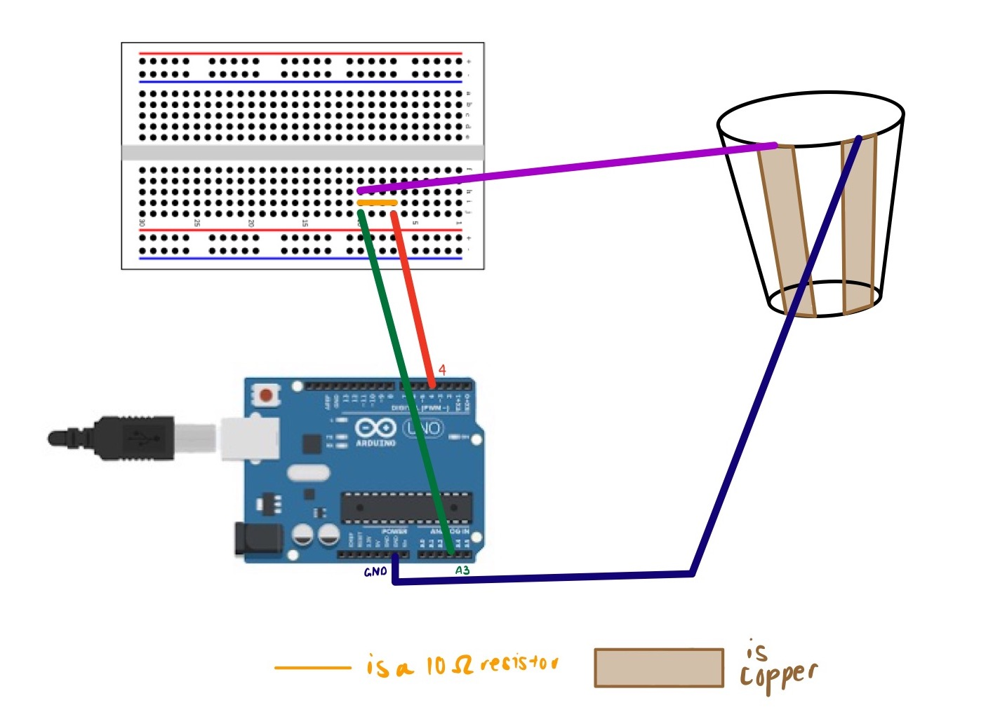
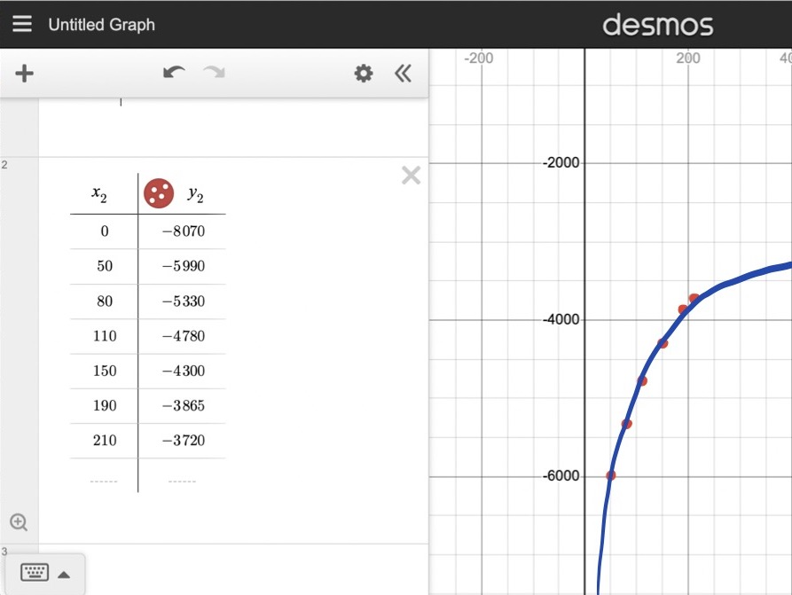
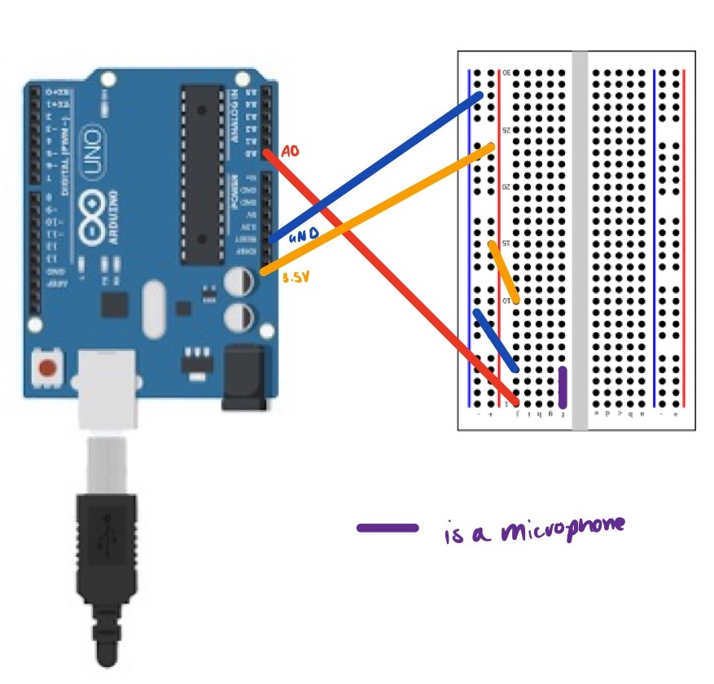
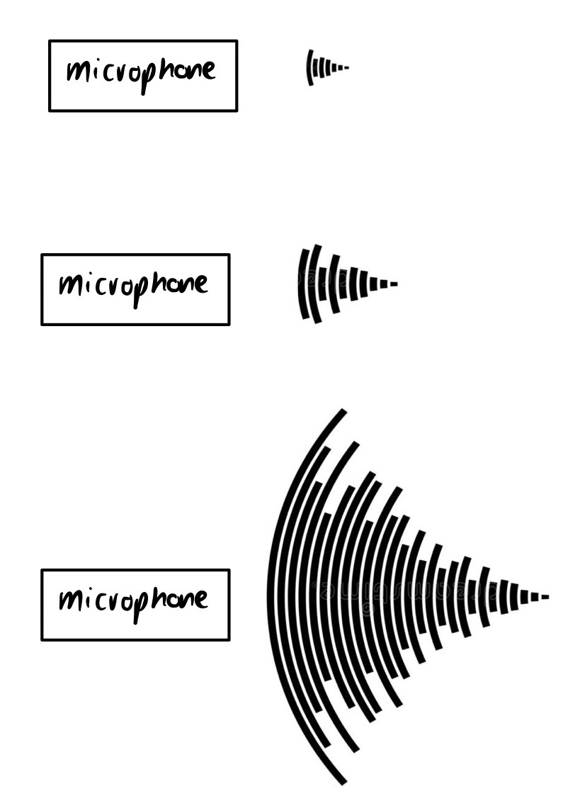
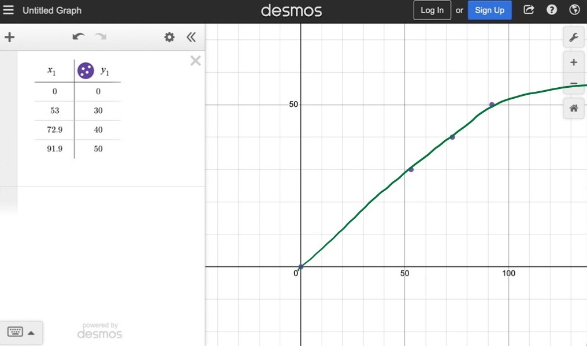

Capacitative Sensor for Volume
Materials
- Arduino Uno
- Breadboard
- Wires & Alligator Clips
- Arduino IDE Software
- Plotting Software
Introduction
I really liked Nathan's in-class demonstration of the volume-sensing capacitative sensor. I also wanted to try my hand at tx-rx sensing instead of using a library, so this project was a good fit for me.
The Process
For this project, I started by building the container that was to hold the water to be sensed. Luckily, the lab has various-sized cups with graduations on the side which were perfect for the job. I then stuck two strips of copper down the sides of the cup, which is where I would power and group the sensor later. See below for a schematic on the sensor!

From here, I wired up the circuitry, making sure that my receiving pin was A3 and my transmitting pin was 4 (since this will follow the code I wrote in Kassia's section).
Shoutout to Kassia for helping me with this next part--but from here I went on to generate the code that Arduino would be able to read, taking the average of 100 readings in order to return a smoother reading in the serial plotter. In this code, a Capacitor class is also created at the top. The number of samples can be changed from 100 to something greater.
class Capacitor{
int tx_pin; //Top capacitor plate
int rx_pin; //Bottom capacitor plate
int high_read; //Read when top plate is charging
int low_read; //Read the resulting discharge of the top plate
int N_samples = 100;
int diff; //Find the difference between the reading the bottom plate gets when the top plate is charging and then discharges to get the result
long result;
int tx_state; //Is the top plate charging?
unsigned long previousMicros;
long capTime; //How long I want the top plate to charge
public:
Capacitor(int tp, int rp, int interval){ //Declare inputs into my class
tx_pin = tp;
rx_pin = rp;
capTime = interval;
previousMicros = 0;
pinMode(tx_pin, OUTPUT);
}
long Update()
{
unsigned long currentMicros = micros(); //Get current time
result = 0; //Reset the result
for(int i = 0; i= capTime)){ //If the top plate has been charging and it is now time to discharge
previousMicros = currentMicros;
digitalWrite(tx_pin,LOW);
tx_state = LOW;
low_read = analogRead(rx_pin); //See what the bottom plate is reading now
diff = high_read - low_read;
result += diff;
}
}
return result;
}
};
Capacitor cap1(4,A3,100); //TX on Pin 4, RX on Pin A3, charge the top plate for 100 microseconds
int data;
void setup() {
Serial.begin(9600);
}
void loop() {
// put your main code here, to run repeatedly:
data = cap1.Update();
Serial.println(data);
}
I then turned to calibrating my sensor, by slowly pouring in different increments of known volume. See below for a plot of the data.
Microphone!
Materials
- Microphone
- Breadboard
- Arduino Uno
- Wires & Alligator Clips
- Arduino IDE Software
- Plotting Software
Introduction
I was inspired by Isa to use a microphone in my project (: It seemed like fun, so I went ahead with the idea.
The Process
For this project, I started by soldering the microphone together, making sure the microphone was facing me when inserted into the breadboard, in order to obtain the best readings.
From here, it was a bit of a task to calibrate. I downloaded an application on my phone that captured the average amount of decibels (how loud something is) over a period of time. This worked! See below for a schema of the way the microphone works.
  As I was calibrating, I got the graph below. The tried a couple of different "sound" inputs into the microphone, including snapping, talking, clapping, and using a drill near it (see the very first photo)! It seemed that the input recorded by the microcontroller tracked pretty nicely to the physical quantities. The graph above can be modeled using a linear regression, in which case the line of best fit is as follows:
Y = 0.5450*X + 0.3230
Essentially, this linear regression is saying that for every one decibel of physical quantity I increasingly "expose" the microphone to, the microphone will continue to capture about 54% of it. As you can see from the graph as well, there is clearly a positive relationship to the input recorded (y axis) and the physical quantities (x axis). I hypothesize as the sounds get louder, the microphone might start losing sensitivity, but I wasn't able to generate extremely large sounds in the lab so this is yet to be determined.